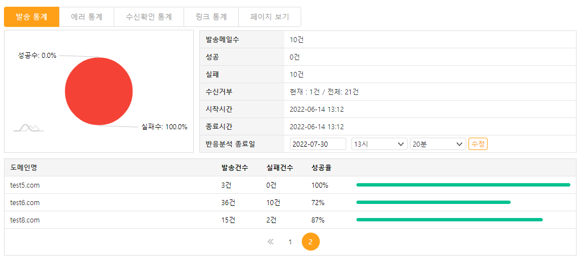
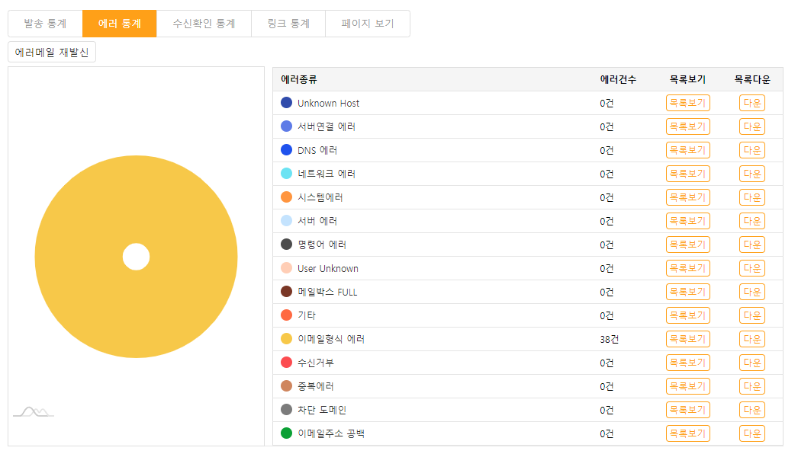
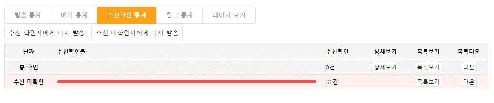
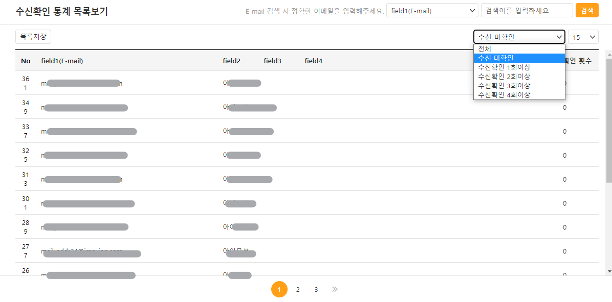
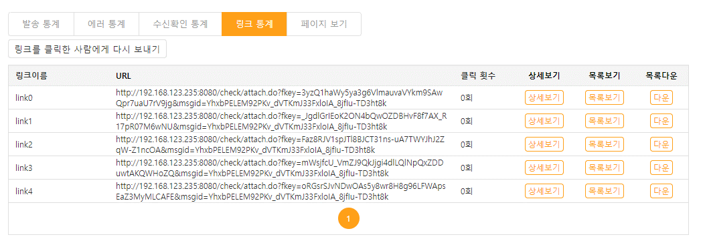
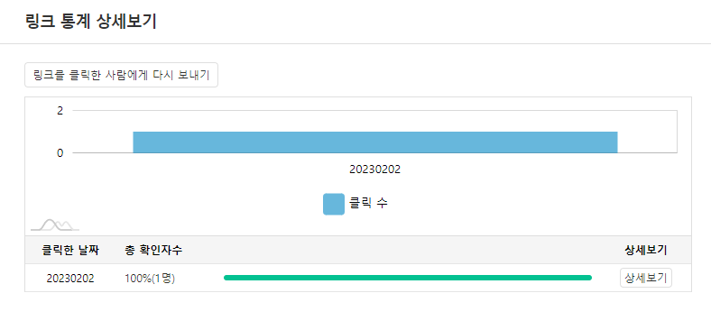
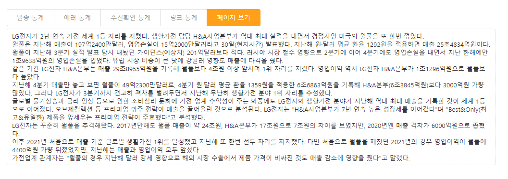

메일발송 결과
메일발송 결과 목록
발송한 메일을 목록으로 제공합니다.-
목록
발송한 메일 및 발송대기(예약발송), 임시보관의 메일목록을 확인합니다. 목록은 발송분류별로 정렬하여 메일을 조회할 수 있고, 발송상태별로 정렬하여 목록을 조회할 수 있습니다. 또한 한페이지에서 볼 수 있는 목록의 수도 15, 30, 50, 100개로 선택하여 조회가 가능합니다.
-
새로고침
목록을 최신의 상태로 새고로침합니다.
-
리포팅 보기
메일 발송이 완료된 메일에 한하여 요약된 발송결과를 확인할 수 있습니다. 리포팅 페이지는 [보기]버튼을 클릭하여 새창에서 확인할 수 있습니다./p>
-
발송분류 이동
목록에서 메일을 선택하고 [이동]버튼을 클릭하여 다른 발송분류로 이동할 수 있습니다.
-
삭제
메일을 선택하여 해당메일을 목록에서 삭제합니다. 예약발송의 메일은 목록에서 삭제하여 예약발송을 취소할 수 있습니다.
-
중지
발송 중의 메일을 선택하여 발송을 중지할 수 있습니다.
-
재발송
메일을 선택하고 [재발송]버튼을 클릭하면 메일쓰기창으로 연결되어 해당 메일을 수정후 재발송할 수 있습니다. 재발송한 메일은 [재발송] 체크되어 발송결과 목록에서 확인할 수 있습니다.
발송결과 상세
메일 제목을 클릭하여 발송결과 상세페이지로 이동하며, 발송 통계, 에러 통계, 수신확인 통계, 링크 통계, 페이지 보기 등의 메뉴를 제공합니다-
발송 통계
발송메일의 기본적인 발`송 통계입니다. 성공실패에 대한 그래프를 제공하며 현재 발송한 메일의 수신거부 목록을 확인할 수 있습니다. 또한 화면의 하단에 도메인별 발송결과를 제공하며 도메인명, 발송건수, 실패건수, 성공율을 확인할 수 있습니다.
-
에러통계
에러통계는 발송된 메일의 세부 에러 통계를 나타냅니다. 에러의 종류는 SensEMS 자체적으로 분류한 결과로 절대적인 값은 아니며 실제 에러와 분류된 결과가 일치하지 않을 수 있습니다.
에러 종류별 항목에 대한 내용은 다음과 같습니다.에러통계 종류 구분 설명 비고 Host Unknown 수신자 메일서버의 호스트명이 올바르지 않음
예) hanmai.net서버연결 에러 수신자 메일서버에 연결 할 수 없음 (연결 실패) DNS 에러 DNS 서버에서 수신자의 도메인을 찾을 수 없음 네트워크 에러 네트워크의 연결상태 및 불안정으로 발생한 에러 SMTP 서버에러 SMTP 프로토콜 단계상의 오류 명령어 에러 수신 메일 서버의 사정에 의해 해당 명령어를 실행할 수 없음 User Unknown 수신 메일 서버에 사용자나 메일 박스가 존재하지 않음 Mailbox Full 사용자 메일 저장 공간 부족으로 메일을 받을 수 없음 기타 기타 알려지지 않은 형태의 메일 발신 에러 이메일형식 에러 이메일에 한글, 특수 문자가 포함되거나 메일 주소가 정확하지 않음 수신거부 SensEMS에 수신거부로 등록되어 메일을 발송하지 않음 중복에러 메일 주소가 연속 중복되어 발송하지 않음 발송차단 메일을 발송할 도메인이 발송 차단에 등록되어 있어 메일을 발송하지 않음 메일주소 미입력 수신그룹이 포함된 데이터베이스 또는 주소록에서 email 값이 입력되어 있지 않아 메일을 발송할 수 없음 -
목록보기
- [목록보기]버튼을 클릭하면 해당 에러의 수신자 목록을 확인할 수 있습니다.
-
목록다운
- [다운]버튼을 클릭하면 해당 에러의 수신자 목록을 엑셀파일로 다운로드 받을 수 있습니다.
-
에러메일 재발신
- [에러메일 재발신]버튼을 클릭하면 발송을 실패한 이메일주소에 대하여 메일을 다시한번 재발송 할 수 있습니다.
- ※ 재발신하는 에러는 서버연결 실패, DNS에러, 네트워크에러, SMTP서버 에러)의 4가지로 한정됩니다.
- ※ 에러재발신 [확인]버튼을 클릭하면 즉시 재발신이 실행됩니다.
- ※ 재발송한 메일은 └[재발송] 체크되어 발송결과 목록에서 확인할 수 있습니다.
-
목록보기
-
수신확인 통계
날짜별 수신확인 결과를 그래프로 확인할 수 있습니다.
전체 수신확인자 수 대비 일별 수신확인 자 수의 비율과 수신확인 건 수를 보여줍니다. (누적그래프는 2일차 이후부터 표시합니다.)
메일쓰기 시, 설정한 반응분석 종료일까지의 수신확인 결과를 제공합니다.-
상세보기
[상세보기]버튼을 클릭하여 해당 날짜의 수신확인 통계를 시간대별로 확인할 수 있습니다.
-
목록보기
[목록보기]버튼을 클릭하여 해당 날짜의 수신확인자 목록을 확인할 수 있습니다.
※ 수신미확인 또는 수신확인 횟수별 목록을 확인할 수 있습니다.
-
목록저장
- [다운]버튼을 클릭하면 수신확인자 또는 수신미확인자의 목록을 엑셀파일로 다운로드 받을 수 있습니다.
-
수신 확인자에게 다시 발송
- [수신 확인자에게 다시 발송] 버튼을 클릭하면 해당 메일을 수신확인한 수신자에게 메일을재발송 할 수 있습니다.
- [수신 확인자에게 다시 발송] 버튼을 클릭하면, 수신확인한 수신자가 수신자로 등록되어 메일쓰기 창으로 연결됩니다.
-
수신 미확인자에게 다시 발송
- [수신 미확인자에게 다시 발송] 버튼을 클릭하면 해당 메일을 수신하지 않은 수신자에게 메일을 재발송 할 수 있습니다.
- [수신 미확인자에게 다시 발송] 버튼을 클릭하면, 수신하지 않은 수신자가 수신자로 등록되어 메일쓰기 창으로 연결됩니다.
-
상세보기
-
링크 통계
메일 본문에 링크가 포함되어 있고, 메일작성시 링크추적 옵션을 사용했다면 SensEMS에서 자동으로 링크를 추적하여 결과를 저장합니다. (단, mailto 와 anchor는 제외되며, 이미지맵도 링크추적에서 제외됩니다.)
※ 메일에 첨부된 첨부파일은 링크파일의 형식으로 수신자에게 전달되므로 첨부파일의 상세결과는 링크통계에서 확인할 수 있습니다.
-
상세보기
[상세보기]버튼을 클릭하여 링크를 클릭한 목록을 확인할 수 있습니다.
- [링크를 클릭한 사람에게 다시 보내기] 버튼을 클릭하여, 해당 링크를 클릭한 수신자에게 메일을 재발송할 수 있습니다.
- [링크를 클릭한 사람에게 다시 보내기] 버튼을 클릭하면, 링크를 클릭한 수신자가 수신자로 등록되어 메일쓰기 창으로 연결됩니다.
-
목록보기
- [목록보기]버튼을 클릭하면 해당 링크를 클릭한 사람의 목록을 확인할 수 있습니다.
-
목록저장
- [다운]버튼을 클릭하면 해당 링크를 클릭한 사람의 목록을 엑셀파일로 다운로드 받을 수 있습니다.
-
상세보기
-
페이지 보기
발송했던 메일의 본문내용을 확인할 수 있습니다.
